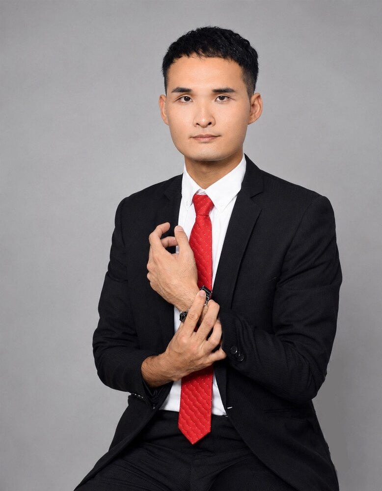
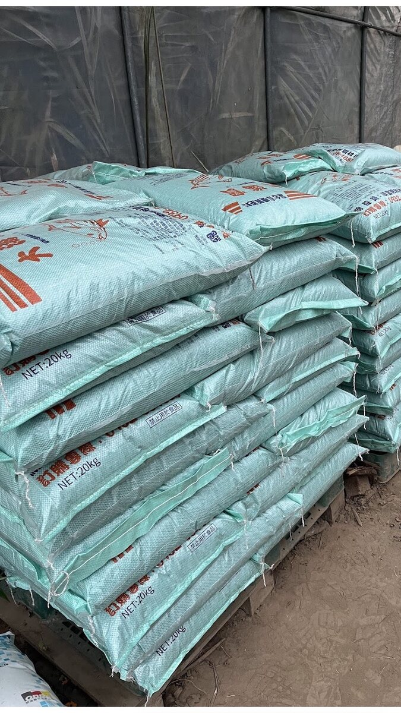
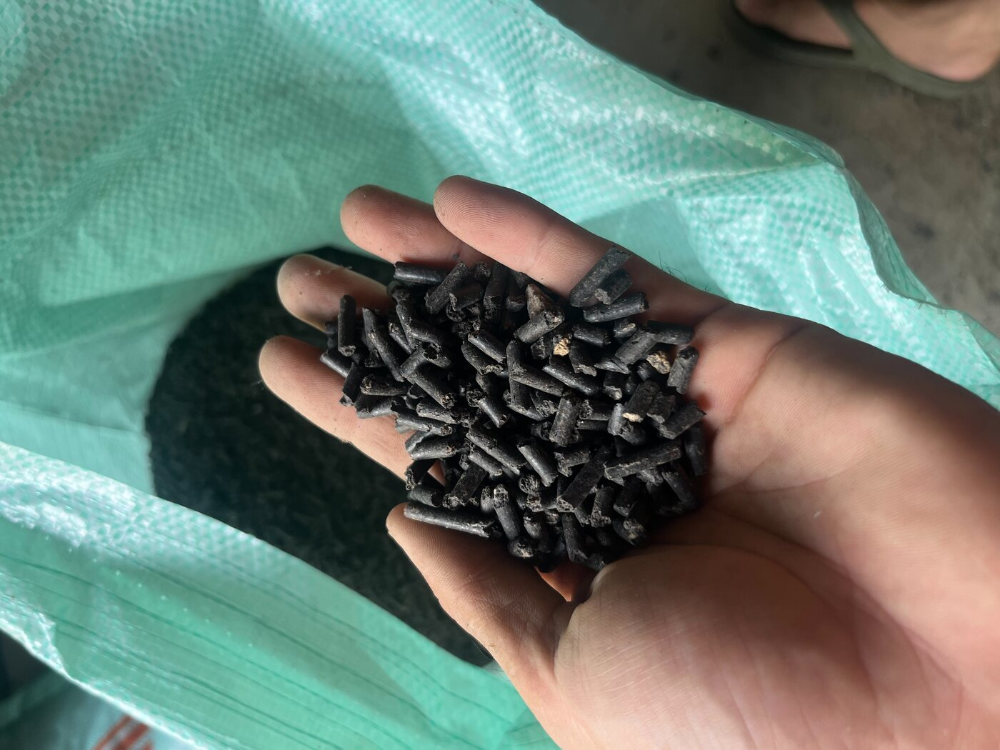
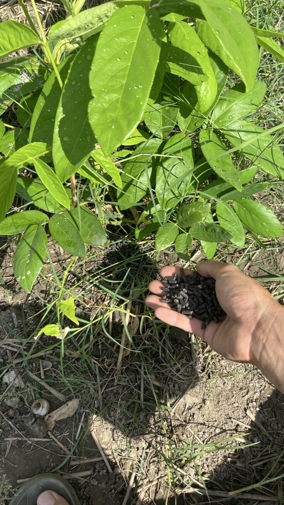

有機肥料
核心業務。以天然來源與長效地力為選品前提，涵蓋顆粒與粉狀劑型。
BNI 真誠分會 · 專業類別 肥料資材
肥料這一行，比的不是誰喊得便宜，
是三年後那塊地還願不願意長東西。

關於育慈
國中的時候，他放了學就跟著父母跑車送貨。二十公斤的肥料袋一包一包搬上車，哪一款下田、哪一款下果樹，是在車斗上聽會的，不是在書上背的。
高中他讀的卻是餐飲科。畢業後拿到中餐乙級技術士證照，在蔬食餐廳、Fine Dining、五星飯店的廚房裡待過，學各國菜系的烹調手法，也學怎麼認識一樣食材、怎麼把它原本的味道完整交出來。
疫情那幾年，他回到彰化溪州，接下家裡經營三十年的肥料商行。從此他看一株作物的角度就跟同行不太一樣——別人看的是產量，他還會多想一句：這東西最後會被誰吃下去。
在廚房，你對不起食材，客人第一口就知道。
在田裡，你對不起土壤，要三年後才知道。
這也是他從父親身上接下來的做生意方式：話說出口就要算數，價格不隨行情亂喊，賣不對的東西寧可不賣。三十年在地口碑，是這樣一車一車累積的。
兩代人
一家肥料行能在同一個鄉鎮做滿三十年，靠的不是行銷，是每一年都還有人願意再打第二通電話。
父親在彰化縣溪州鄉起家，以有機肥料買賣為本業，服務濁水溪畔的農友。
跟著父母送貨、認識品項與用途，也看著父親如何跟農友談價、如何處理一次出錯的訂單。
蔬食餐廳、Fine Dining、五星飯店。學的是食材的脾氣，帶回來的是對「品質」的另一套標準。
回到溪州承接家業，重新盤整品項結構，把重心壓在天然、稀有、可長期供應的產品線上。
經營肥料商行的同時，維持自己的實驗農園與食農教育內容，把田間試出來的東西直接講給農友聽。
他真正少見的地方
農業資材這一行懂肥料的人很多，懂料理的人很多，兩邊同時是專業的，很少。這讓順業能回答一個大部分同業回答不了的問題：這樣施肥，最後端上桌會是什麼味道。
從根部生長出發，依作物、土質、季節與水分條件調整配方建議，而不是把同一包肥料賣給所有人。自營實驗農園，做中學、學中做，新品項先在自己的地裡種過才敢推薦。
知道一顆蔬菜怎麼種、也知道它怎麼被煮。透過「慕斯の田園小廚房」分享從田地到廚房再到餐桌的完整過程，做食農教育、推廣在地食材與減少不必要的資源浪費。



產品與服務
核心業務。以天然來源與長效地力為選品前提，涵蓋顆粒與粉狀劑型。
針對根系發育與生長階段的補強方案，依作物與季節條件建議搭配。
與有機肥搭配使用的必要資材，講求合理用量與清楚的使用說明。
實驗農園、栽種與料理內容分享。不是單向教學，是經驗交流。
選品原則
三十年下來，這家店只守三條規矩。它們同時也是育慈判斷一項新產品要不要進的標準。
盡可能不賣同行手上已經有的東西。找的是別家調不到、農友在市面上不容易遇見的品項。這讓順業的價值不建立在比價，而建立在「只有這裡有」。
清楚選擇不進入削價競爭。願意為品質付出的農友，需要的是一個不會因為市場亂而偷偷換料的供應商。順業把資源放在這群人身上。
不看人喊價，不趁缺貨抬價。價格穩定聽起來不性感，但對每一季都要抓成本的農友來說，這就是最實際的信用。也是業界口碑的來源。
服務對象
順業的客戶大致分成兩類：一類是農業資材零售通路（例如興農店等在地農藥資材行），一類是直接下田的農友與農場。
共同點是——他們的作物成敗都跟根部生長脫不了關係：需要養地、需要調整土質、需要在對的時間給對的東西。約有一半的生意來自轉介紹，其餘來自與農業相關的陌生開發。
給 BNI 真誠分會的夥伴
最好的引薦不必懂肥料。你只要在對話裡聽見下面任何一句，把我的名字丟出去就可以了。
「我家那塊地種不太起來。」
土壤養分失衡、地力衰退，正是需要重新盤整施肥策略的時候。「我想找不一樣的肥料。」
市面上到處都買得到的東西，這裡通常沒有。稀有品項是順業的主場。「肥料商一直換料、一直漲價。」
價格穩定與品項不亂換，是三十年的招牌，也是最常被轉介紹的理由。「我在做有機／無毒栽培。」
有機肥料是本業核心，且育慈自己也有實驗農園可以對照經驗。「我開資材行／想找上游。」
順業長期服務農業資材零售通路，可談穩定供應與品項差異化。「我們想辦食農教育活動。」
從栽種到料理的完整內容，加上中餐乙級的料理專業，可以直接落地。我能提供給夥伴的
聯絡順業
不用先想好要買什麼。把作物、土質狀況和你遇到的問題講一遍，我們再一起決定該不該花這筆錢。